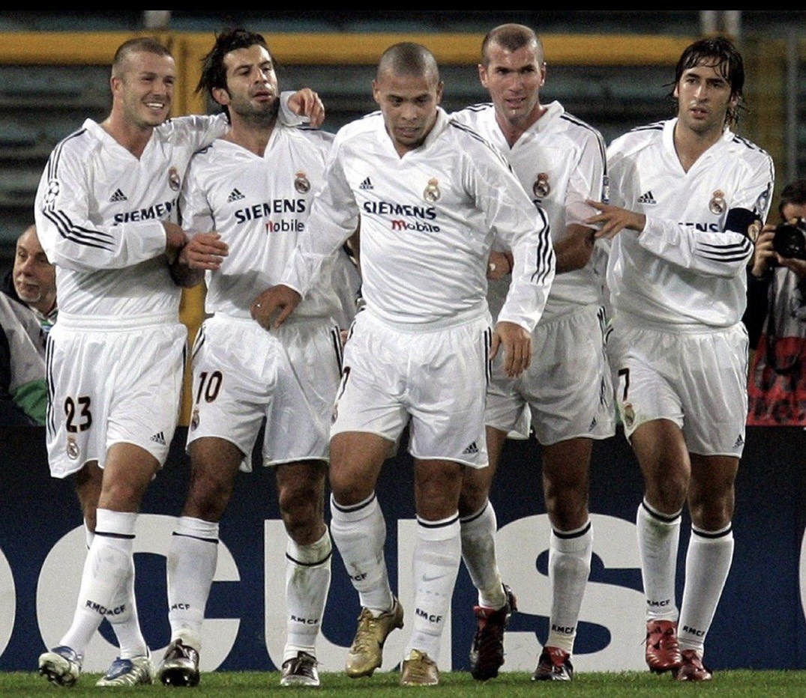
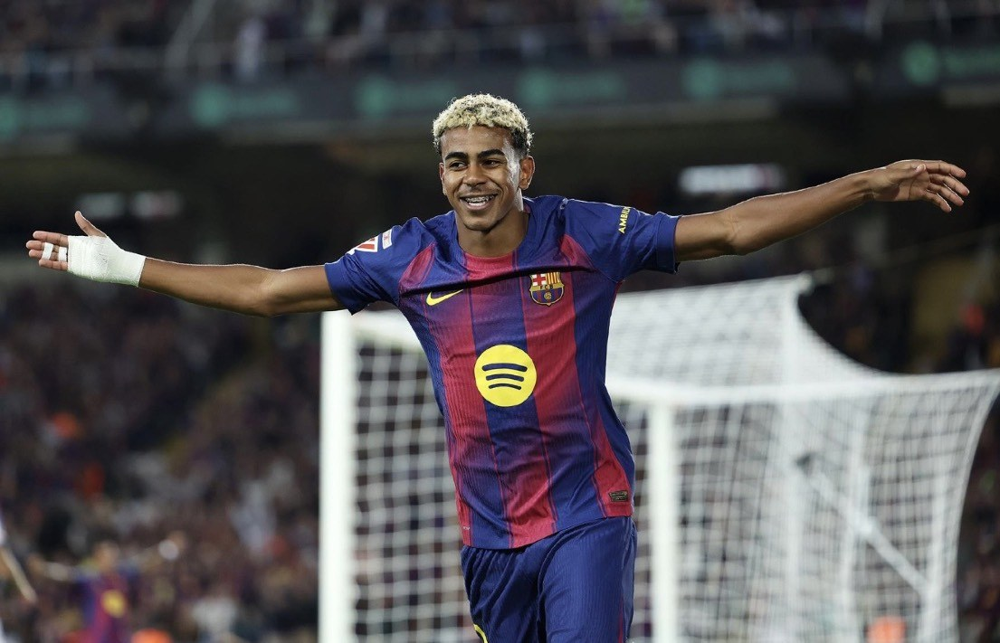
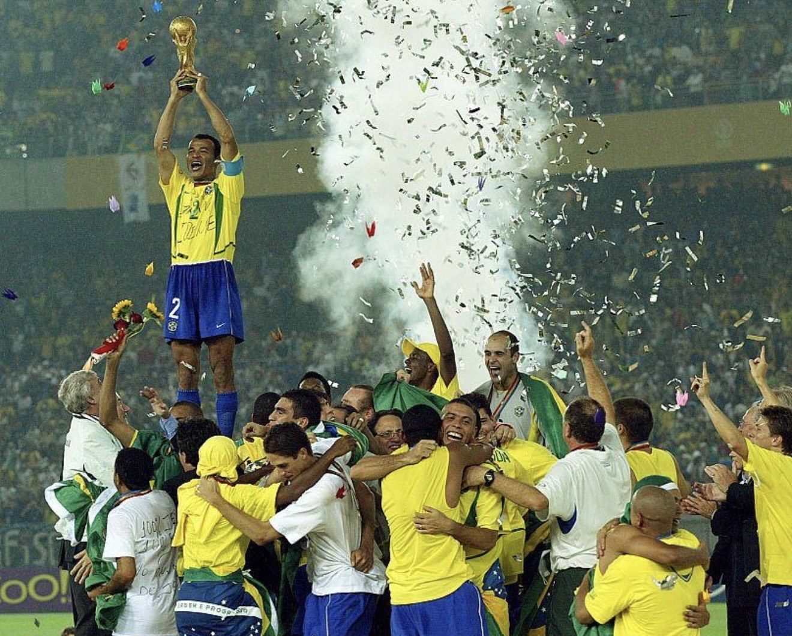

Легенды
мирового футбола
Коллекция автографов к чемпионату мира — 2026
Двенадцать экспонатов — шесть глав футбольной истории

Легенды, изменившие историю футбола
Футбол — это история великих личностей, каждая из которых определила целую эпоху. Именно такие игроки превращали отдельные матчи в легенды, а чемпионаты мира — в события, которые навсегда остаются в памяти миллионов болельщиков. Особенно символично обращаться к этим реликвиям во время чемпионата мира, когда внимание всего футбольного сообщества вновь приковано к величайшему турниру планеты.

Диего Марадона
Диего Марадона — один из величайших футболистов в истории мирового спорта. Именно он привёл сборную Аргентины к победе на чемпионате мира 1986 года, создав одни из самых знаменитых моментов в истории футбола. Автограф Марадоны — центральный экспонат практически любой серьёзной футбольной коллекции.

Пеле
Пеле — величайшая легенда мирового футбола и единственный в истории трёхкратный чемпион мира. Именно его имя стало символом красивой игры и эпохи безоговорочного доминирования сборной Бразилии. Автограф Пеле считается одним из самых востребованных среди коллекционеров и занимает особое место в любой серьёзной коллекции футбольных реликвий.

Золотые эпохи великих клубов
«Милан» Сакки и Капелло, «Барселона» золотого поколения, «Реал Мадрид» эпохи Galácticos — команды, которые меняли само представление о футболе. Автографы их легенд символизируют расцвет европейского клубного футбола и считаются одними из самых востребованных среди коллекционеров.

Мяч финала Лиги чемпионов УЕФА — 2006
Официальный памятный мяч финала в Париже, где «Барселона» победила «Арсенал» со счётом 2:1. Автографы: Лионель Месси, Роналдиньо, Хави, Деку, Эдмилсон, Беллетти, Жюли, Силвиньо, Пуйоль, Вальдес, Маркес. Состав, открывший эпоху доминирования клуба; для молодого Месси тот сезон стал началом пути к статусу величайшего игрока поколения. Один из самых масштабных футбольных экспонатов коллекции.

Дэвид Бекхэм
Чемпионат мира 2002 года стал одним из самых эмоциональных турниров в карьере Бекхэма: именно тогда он вывел сборную Англии на поле в статусе капитана и окончательно закрепил за собой репутацию одного из главных лидеров мирового футбола. Официальный мяч чемпионата мира с его автографом — предмет, напрямую связанный с крупнейшим футбольным событием планеты.

Криштиану Роналду
Золотой мяч символично перекликается с главным индивидуальным трофеем мирового футбола — «Золотым мячом», который Криштиану Роналду выигрывал пять раз. Лучший бомбардир в истории футбола и один из самых титулованных игроков всех времён. Такой экспонат — не просто предмет с автографом, а символ целой эпохи, связанной с именем одного из величайших спортсменов XXI века.

Килиан Мбаппе
Переход Килиана Мбаппе в мадридский «Реал» стал одним из самых ожидаемых трансферов последних лет. Для клуба это приобретение нового лидера, вокруг которого строится будущее команды. Футболка относится к самому началу новой главы в карьере одного из сильнейших футболистов современности и особенно интересна коллекционерам именно своей актуальностью.

Новое поколение суперзвёзд
Сегодня на первый план выходит поколение игроков, которым предстоит определять результаты крупнейших турниров ближайших лет. Многие из них уже стали лицами своих клубов и сборных. Именно такие автографы обладают наибольшим инвестиционным потенциалом — и особенно актуальны в год чемпионата мира.

Ламин Ямаль
Ламин Ямаль — самый яркий воспитанник академии «Ла Масия» со времён Лионеля Месси. Уже в юном возрасте он стал одним из лидеров «Барселоны», определяющим игру команды своей техникой, скоростью и нестандартными решениями. Домашняя футболка каталонского клуба с его автографом — один из самых востребованных современных коллекционных экспонатов.

Эрлинг Холанд
Выступая за национальную сборную, Холанд стал главным символом современного норвежского футбола. Несмотря на молодость, он уже является лучшим бомбардиром в истории своей страны. Эта футболка отражает международную карьеру игрока и его особую роль для норвежского футбола.

Чемпионы мира. Национальные легенды
Чемпионат мира — главный турнир в карьере любого футболиста. Именно выступления за национальные сборные превращают выдающихся игроков в настоящие легенды мирового спорта — звёзд, которые прославили свои страны на крупнейших международных турнирах и навсегда вошли в историю.
Показ экспонатов — в бутиках Stargift.
Каждый предмет сопровождается международным сертификатом подлинности.